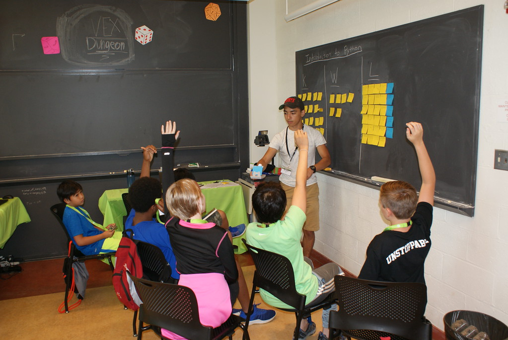
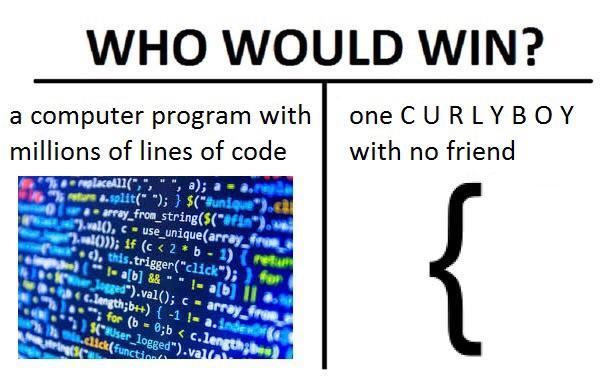
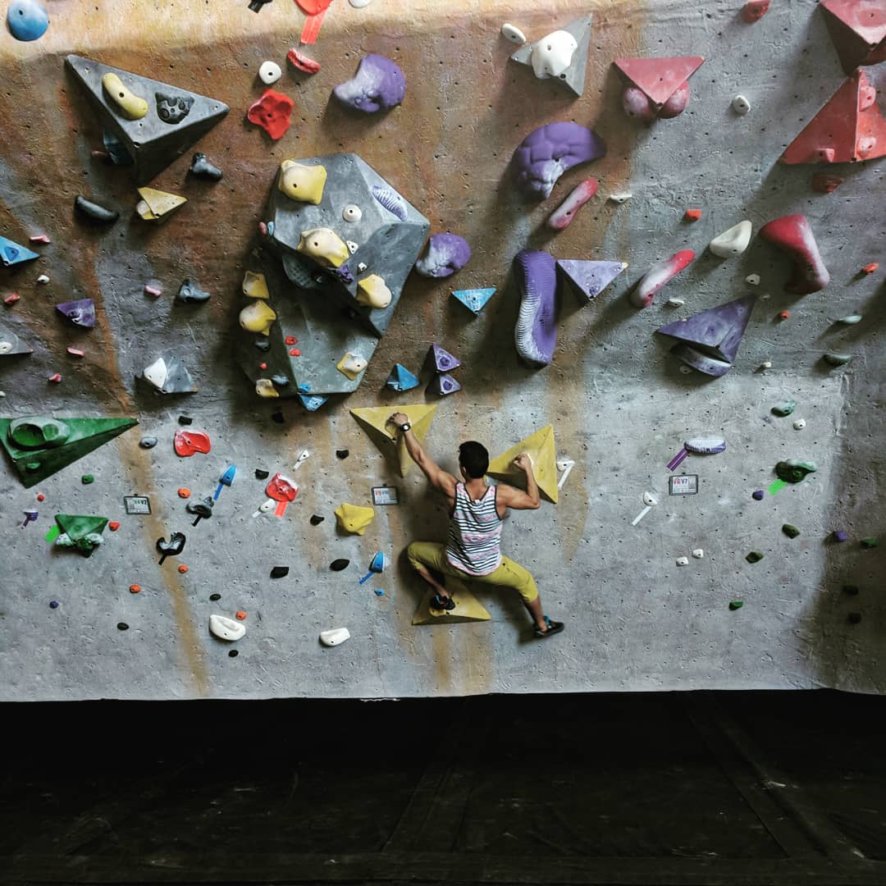
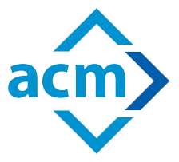

The Jeffafa Times
est. June 17, 1997
VOL..I
Worcester, Thursday, August 30, 2018
$1.99
About The Founder
My name is Jeffrey Estrada. I come from Chelsea, MA, which is a small city very near to Boston. My family is from Guatemala, so my childhood was spent being raised the Guatemalan way. The city I was raised in was filled with mostly people from Guatemala, Honduras, El Salvador, and many other countries (not only from latin america, but a lot came from there). From a young age I was exposed to a lot of different cultures. Hence I also enjoy learning about different cultures.
Also because I don't know where else to put it: I have basic experience with HTML, CSS, and Java just from my classes. I am pretty good at python. I self-taught myself python and have taught it at a summer camp and used it in my summer internship. And I have very little to no experience in JavaScript, Ruby, and unit testing.
A Summer in New Hampshire

This summer I have had the opportunity to work at a major company called Arista Network. Here I worked on their counters team, which is the team that counts the number of packets that go through the devices that they sell. At first, this sounds very simple but once you get involved and learn about how the product works you can see it become more complicated. Something that I really enjoyed about working at Arista is that it is still growing, despite already being so large. Everyone there is responsible for thier code in the fullest. Every individual is responsible for creating their code, testing it, and maintaining it in the fullest. And they all review each others code. I don't really know if this is something that happens often at every company, but I really enjoyed it here.
A Story About Someone Who Enjoys Teaching
In the past couple years I have had the chance to be a teacher, tutor, and a leader within the Computer Science community. During my first summer out of college I had the opportunity to work at iD Tech Camps. Here I was able to teach kids basic programming concepts with a block coding site, similiar to Scratch. Along with that I was also able to teach kids programming and game design with python and pygame. Those 12 weeks were a great experience. The picture above is a picture of one of my classes. It was great seeing them go from knowing nothing about programming to creating a fully functional 2D game.
After this program, I had gone back to my high school and teach a small series of programming classes to introduce students to the world of Computer Science. I was glad to hear that in the following year, that one of the students I had taught actually went to college to study Computer Science. Just knowing that I could impact at least one person made me feel really good and led me to want to teach more. So I did the next best thing. I became a tutor and an SA. This is my second year in both of those roles and I've enjoyed having the chance to help other collegues when they struggled in their classes. Seeing their reaction when they got the answer is one of the best things ever.
I have also had the lucky opportunity to become the President of WPI's ACM Chapter. This has allowed me to help the Computer Science community at WPI by allowing me and the rest of the team to create events that can allow fellow students to improve themselves and connect them with others. I have helped make multiple workshops available to the WPI community. Some of the workshops included our Python Language Lab, GDB Workshop, and our Git Workshop. Opening up these resources to people made me realize that teaching isn't the only thing I like. I like making education available to people and to give them the opportunity to grow.
Daily Meme
Activities
- Rock Climbing
- Dancing
- Working Out
- League of Legends
- Avid watcher of TV Shows on Netflix
- Meme Watcher
- Coding in C or Python
- Figuring out Web Dev
Crazy Man Found Climbing @ 8am On A Monday
Monday morning on the second week of A term, when most people would be trying to get as much sleep as they can at WPI, Jeffrey Estrada was at CRG Worcester trying out some new boulder problems. He says that despite having just started climbing in May, he is growing to love the sport more and more every day. It allows him to focus on technique, strength, and flexibility. Rock climbing has also allowed him to use his critical and analytical skills to figure out the tricky problems which are set by CRG's setters Rob and Scott. He currently is able to climb V3s and some V4s, he is hoping that by the end of his A Term he can climb a V5, maybe even a V6 and to get certified for Lead Climbing.
Join ACM!
[Shameless Advertising]

Join Us! Meetings on Wednesdays in OH109 5-7pm :D
- Sept 5, 2018 : So You Want To Be A CS Major?
- Sept 12, 2018 : Company Speed Dating
- Sept 19, 2018 : Field Day
- Sept 26, 2018 : Docker Workshop
- Oct 3, 2018 : Game Night!